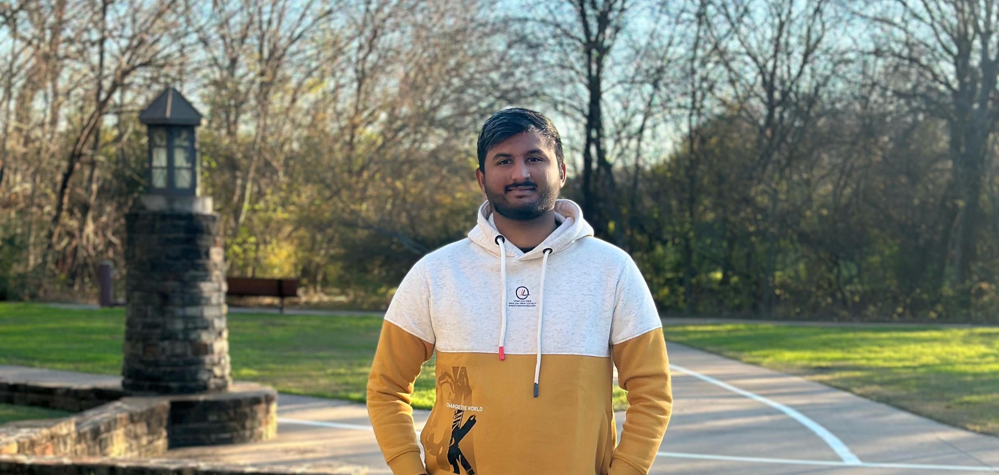
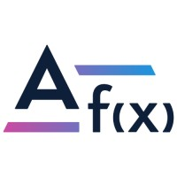

About

Inherently, I am an enthusiastic advocate of technology, deeply driven to employ cutting-edge innovations in addressing practical, everyday problems. My overarching objective is to conceive and expand inventive solutions that enhance the quality of life. My proficiency lies in forming and guiding teams, swiftly embracing novel perspectives, and surmounting intricate hurdles to achieve this mission.
I am currently pursuing a Master of Science in Computer Science at the University of Texas at Arlington. As a Graduate Research Assistant, I've been involved in cutting-edge research in the fields of Optimization and Machine Learning for Networks, contributing to groundbreaking advancements in graph neural networks. My role requires strong leadership, adaptability, and problem-solving skills, which I consistently apply.
Based on my personal and professional experiences:
- I excel at leading projects and managing diverse teams.
- Effective communication is one of my key strengths.
- I have a strong inclination to make well-informed decisions based on data.
- I am dedicated to continuous self-improvement, both personally and professionally.
In my spare time, I cherish meeting new people and gaining fresh experiences. I'm an avid reader, movie enthusiast, and I'm constantly seeking ways to broaden my knowledge and refine my perspectives on various subjects. My passion for growth and learning is a driving force in both my personal and professional life.
More details about me
I being a logical thinker, I had always found myself drawn to Science, Mathematics, and Computers. My affinity towards these subjects led me to win a gold medal in the International Mathematics Olympiad and National Science Olympiad. My first tryst with computers was in secondary school when studying the fundamentals of computers. For me, computers have always been a fascinating invention: a little device that works wonders. Writing every line of code snippet piqued my interest in learning more about this profession. However, the most intriguing aspect was that the computer profession included all three of my favourite disciplines, which prompted me to seek a Bachelor's degree in Computer Engineering and also ignited my interest in artificial intelligence and machine learning.
In college, I generally indulged myself in complex projects and research papers from within and outside our coursework. I studied my subjects with deep interest and a thorough understanding of the basic concepts governing them. This led to attaining good grades over each of the past six semesters, and at the same time, I cleared the GATE test among the top 5% students in India. However, I soon realized that to continue this perusal towards expertise within the topics of my passion, I will certainly have to attempt higher learning, and the best course available is to attempt a Master’s degree in Computer Science in the USA. During interaction with my professors, it revealed that the work done so far presented would be an ideal base, and this, combined with my academic pursuits and interests, will make me a graduate student with knowledge and focus. I will certainly add a high level of motivation and determination for success and a willingness to put in hard work.
My project work has been focused on the use of one or more tools and technologies to achieve specific results. At the state-level hackathon, I presented a project named "Universal Electronic Medical Health Record AI-App" (Android-JAVA, Firebase, MySQL). The project is intended to provide a paperless service to store records and with a pre-trained AI-model to detect suspected diseases. Further, I undertook an SSIP-funded IoT project (Raspberry Pi), "E Attendance System using Machine Learning." I trained a facial recognition model using the CNN-HOG hybrid approach and created a simple pipeline to train it on GPU-Server. A paper on this was presented at the international conference and is projected to be published in a Scopus-indexed journal. Next, I worked on "PlantConnect: Your Farm AI-Helper App." It is a crop disease predictor developed using machine learning and android. The ResNet-50 Keras model was trained using the 54305-image dataset, which was able to detect 26 diseases in 14 varieties of crops (Accuracy 97.57%). English to Hindi is difficult for many, so I created a seq2seq model for language machine translation, which I trained using a custom dataset of 10,000 English-Hindi pairs. I also worked on "Sudoku Solver WebApp Using OpenCV", built using Flask, Backtracking Algorithm, Image Processing, OpenCV, and Python. These were some of many projects that significantly strengthened my base in software development using artificial intelligence and machine learning.
Besides projects, undertaking complex research has been a passion. This has led me to work on numerous contemporary topics, including "Blockchain-based Software-Defined Vehicular Networks for Intelligent Transportation System Beyond 5G"; "A Comprehensive Review on Intelligent Traffic Management using Machine Learning Algorithms" (both accepted in Springer); and "A Comprehensive Review on Crop Yield Prediction using ANN and CNN" (projected to be published in Springer). These were identified by me as some of the emerging technologies, which are very close to my interests and passion. I conducted an extensive library search through various resources to arrive at an exhaustive database. I then proceeded to study and analyze it, which later whetted with the inputs from industry professionals
Working among professionals has been a passion that I have nurtured over time. This led me to work at Skibb Tech PVT. Ltd., Ireland, where I, through remote interaction, worked on NLP and AWS-based technologies for voice response data. My task was to develop a named-entity relation model using spaCy/NLTK and to develop an audio-fingerprint matching mechanism. I also worked as a market research analyst intern at PackBagBuddy to hone my skills in data visualization and analysis using Tableau. Another rewarding experience was at Infomize Technologies as a machine learning intern with the specific role of developing in computer vision (MMDetection, detectron2) and working with Azure cloud services to make it scalable. While these experiences were highly fulfilling and satisfying, they also made me aware of the latest level of technology evolution and the direction and pace that it is going to follow in the future. And though I was always highly motivated towards pursuing a graduate degree, these experiences made my decision sacrosanct.
To prepare me for the task, I have undertaken various independent coursework through perusal of online courses such as Machine Leaning (Stanford-online), Deep Learning and TensorFlow Developer Professional Certificate Specialization by deeplearnig.ai, and many more. Also attended workshops on Data Science, Internet of Things and Django. It's an immense pleasure to tell you that I am a state-level field hockey player, and a core-team member of various student clubs and GTU Central Techfest’19. All these led to strengthening my leadership and group skills, as I was involved in making executive decisions and building rapport.
Master of Science in Computer Science
University: University of Texas at Arlington
Duration: August 2022 - May 2024
GPA: 3.7
Bachelor Of Engineering in Computer Engineer
University: Gujarat Technological University
Duration: August 2018 - May 2022
GPA: 3.71
Skills
Languages: Python, Java, C/C++, JavaScript, React, HTML5, CSS, PHP, Scala, Bootstrap
Frameworks: OpenCV, NLTK, SpaCy, TensorFlow, Pytorch, AngularJS, NodeJS, ReactJS, Django, Flask, Android JAVA
Development: Web Framework, Back-End Engineering, Machine Learning, Natural Language Processing (NLP)
Tools: Jupyter, Android Studio, GIT, GitHub, Hadoop, MapReduce, Pig, MySQL, MongoDB, PostgreSQL, SQLite
Platforms: Web Application Development, GCP, Microsoft Azure, Tableau, Power BI, Unix, Windows, Docker
Soft Skills: Leadership, Innovative, Collaborative, Quick Learner, Analytical and problem-solving, Critical Thinking
Software Engineering
Company: AGIL f(x)
Duration: Aug 2024 - Present

- Implemented full-stack solutions using Python, React JS, and MongoDB, boosting system scalability by 25% and improving performance by 30% in high-traffic scenarios.
- Implemented hybrid search (dense + sparse retrieval) in Pinecone to optimize AI model performance, combining semantic vector search with keyword-based filtering for enhanced data retrieval and accuracy.
- Designed and implemented AI pipelines using LangChain and LangGraph, enabling efficient retrieval-augmented generation (RAG), agent-based automation, and multi-step stateful workflows, improving AI-driven decision-making and system adaptability.
Graduate Research Assistant and Web Developer Student Assistant
Company: University of Texas at Arlington
Duration: January 2023 - Present
As a Graduate Research Assistant, I'm contributing to cutting-edge research in Optimization and Machine Learning for Networks:
- Leading research in the field of Optimization and Machine Learning for Networks, utilizing Graph Neural Networks on large networks.
- Collaborating closely with Prof. Jinzhu Yu and applying advanced Graph Neural Network techniques to address complex network optimization challenges.
Software Engineering
Company: AGIL f(x)
Duration: Jan 2021 - July 2022
As a Software Engineering at AGIL f(x), I played a pivotal role in the development of a thread-safe web application for telecommunications:
- Leveraged core Java, Spring Boot, and MySQL to create a robust and secure backend, ensuring thread safety for enhanced performance and reliability.
- Integrated RESTful APIs with the frontend, showcasing my API design skills using Spring Boot and seamlessly connecting them with the frontend developed with AngularJS, SCSS, and HTML5.
- Implemented Agile methodology for software development, utilized Swagger for API documentation, and managed project collaboration and version control with BitBucket/GitHub.
Machine Learning Engineer Intern
Company: Infomize Technologies
Duration: June 2020 - Dec 2020
During my internship at Infomize Technologies, I contributed to increased productivity and revenue through machine learning projects:
- Used PyTorch Mmdetection to accelerate the data mapping team's productivity by conducting Entity Classification and Table detection on document images, resulting in an additional $650K in revenue and a 70% increase in customer acquisition.
- Implemented the FasterRCNN Object Detection Algorithm, achieving an 82% mean Average Precision (mAP) and precise bounding boxes for 20 classes.
- Managed all aspects of the project, including model training, REST API deployment, and seamless integration with the frontend.
TailorSweat: Workout Prediction Application
Tech Stack: Python, Convolutional Neural Networks (CNN), Data Engineering, Knowledge Rule Generation, Reinforcement Learning
Description: Worked on the development of TailorSweat, a workout prediction application that utilizes various technologies and techniques. Key contributions and responsibilities included:
- Performed data modeling, validation, and processing on collected data to ensure data quality and consistency.
- Designed and developed the workout prediction app based on user preferences and profile settings, providing a personalized workout experience.
- Implemented machine learning algorithms and a neural network (CNN) to suggest personalized workout routines, taking into account user preferences and historical data.
- Established a system for storing predictions and continuously improved the application based on user feedback, using weighted aggregation techniques to enhance prediction accuracy.
Food Delivery Web App
Tech Stack: HTML, CSS, React.js, PHP, MySQL, UTA Cloud
Description: The Food Delivery Web App is a comprehensive platform designed to facilitate seamless food ordering and delivery. Leveraging a stack of versatile technologies, our team created an efficient and user-friendly solution to streamline the food delivery process. Here are the key aspects of the project:
- Utilized HTML and CSS for the web interface to provide an engaging and visually appealing user experience.
- Developed the front-end with React.js, enhancing interactivity and providing a modern and responsive design for users.
- Employed PHP for back-end functionality to manage user accounts, orders, and restaurant interactions.
- Integrated a robust MySQL database to store user profiles, menu items, and order histories, ensuring data accuracy and consistency.
- Deployed the app on the UTA Cloud platform, guaranteeing accessibility and scalability.
Sudoku Solver
Tech Stack: Python, Convolutional Neural Networks (CNN), Data Engineering, Computer vision, HTML, CSS, JS
Description: Project is a web-based Sudoku Solver powered by advanced computer vision. It effortlessly interprets Sudoku puzzles from images, providing quick and accurate solutions, making Sudoku accessible and enjoyable for all.
- Developed a web app using Streamlit and computer vision to solve Sudoku puzzles.
- Empowered users to effortlessly solve Sudoku challenges by deciphering puzzles in image form.
- Leveraged deep learning models and computer vision to compute solutions for blank cells.
- Overcame challenges in image preprocessing and model integration, optimizing the user experience.
PlantConnect: Farm AI Helper
Tech Stack: Android (Java), Python, PyTorch, Keras, FastAI, TFLite
Description: Analyzed model accuracy using ResNet and FastAI on both desktop and mobile (Keras). Developed a mobile application for disease detection, identifying 20 diseases across 14 crops using a trained model with a dataset of 34,005 images.
Stock Market Prediction using Numerical and Textual Analysis
Tech Stack: Python, NLTK, RNN, ANN
Description: Performed Textual Sentiment Analysis (Natural Language Understanding (NLU)) on financial news headlines using NLTK and RNN (Keras). Evaluated Naïve Bayes, GRU, and deep learning models (ANN, MLP) for stock price prediction based on sentiments. Achieved the lowest RMSE of 0.22287 with MLP, while ANN had an RMSE of 0.33761.
Fire Detection Using Customized Basic CNN and InceptionV3 Model
Tech Stack: PyTorch, Keras, MobileNet, TFlite, Flask
Associated with VISHWAKARMA GOVERNMENT ENGINEERING COLLEGE, CHANDKHEDA, GANDHINAGAR 017
Key Contributions and Responsibilities:
- Analysed Accuracy of ResNET – 152 on PyTorch, Fast.ai on Keras, ResNET – 50 on PyTorch, and MobileNET on Keras.
- Detect 26 types of diseases from 14 crops with the help of a trained model using a dataset that has 54,305 images.
- Model is deployed on an Android app using TFlite and also on a web app using Flask.
Crop Yield Estimation Using Machine Learning
Tech Stack: Regression Techniques, ExtraTreesRegressor
Associated with VISHWAKARMA GOVERNMENT ENGINEERING COLLEGE, CHANDKHEDA, GANDHINAGAR 017
Key Contributions and Responsibilities:
- Tested multiple regression techniques to design a program that estimates crop yield for the five crops grown on the Indian subcontinent.
- Among these techniques, ExtraTreesRegressor obtained a promising R2 score of 99.95.
Attendance Management System - Django Web App
Tech Stack: Django, CSS, SCSS, MySQL
Web app with three user interfaces, i.e., HOD, Faculty, Student, gives access to mark attendance, manage assignments, add students or classes, and send notices based on given permission.
Django with use of CSS, SCSS, and MYSQL database to store the data.
One can add information of student, student with the help of dashboard can view their attendance record, and faculty can send mails to student.
Unique way to mark attendance and easily one can store and print out the report of it.
COVID-19 Analysis and Prediction
Tech Stack: Deep Learning, Convolutional Neural Networks, AlexNet, Inception v3
The dataset containing 956 X-ray images of three classes, namely COVID-19, viral pneumonia, and normal, is used.
Standard deep learning models like AlexNet, ResNets and Inception v3 along with various custom models of convolution neural networks (CNNs) have been trained and tested on the dataset.
The Inception v3 model gave the best training accuracy of 99.22%, while custom-made CNN3 gave a promising training accuracy of 96.61%.
Both models gave a similar validation accuracy of 97.89%. Sensitivity and specificity for COVID-19 were (100% and 98.5%) and (100% and 100%) for Inception v3 and CNN3, respectively.
Smart Attendance System IOT (Conference Paper Project)
Tech Stack: Convolutional Neural Networks, Facial Recognition
Associated with VISHWAKARMA GOVERNMENT ENGINEERING COLLEGE, CHANDKHEDA, GANDHINAGAR 017
Key Contributions and Responsibilities:
- Designed convolutional neural networks for facial recognition and for an attendance system for a college live project.
- Model continues to update itself on a remote GPU server (DELL Server), and mean accuracy reaches up to 98% with low loss.
Machine Translation Using Attention Model
Tech Stack: Machine Translation, Attention Model
Associated with VISHWAKARMA GOVERNMENT ENGINEERING COLLEGE, CHANDKHEDA, GANDHINAGAR 017
Streamlit Sudoku Solver Webapp
Tech Stack: Streamlit, OCR, Backtracking
We built the app using Streamlit. The app allows us to upload an image, solve the Sudoku, and display the results. In this small project, we built a Sudoku solving application in Streamlit. We trained a custom OCR model along the way and used backtracking to solve the actual Sudoku grid.
Stock Market Prediction Using Numerical and Textual Analysis
Tech Stack: Sentiment Analysis, Textual Analysis, Deep Learning
Associated with The Sparks Foundation
Key Contributions and Responsibilities:
- Conducted textual sentimental analysis on a financial newspaper headline dataset using NLTK and RNN (KERAS), Naïve Bayes, GRU.
- Utilized deep learning models for stock price prediction based on sentiments, achieving low RMSE values.
Ocular Disease Prediction Using Retinal Scans
Tech Stack: Disease Classification, Convolutional Neural Networks
Key Contributions and Responsibilities:
- Created a platform that can classify six different types of diseases based on the patient’s retinal scan.
- Trained a convolution neural network on 1,705 images, yielding an 84% validation accuracy.
Part-of-Speech Tagging Using NLP
Tech Stack: NLP, BERT, Part-of-Speech Tagging
Associated with SKIBB TECH LIMITED
Key Contributions and Responsibilities:
- Used the Bidirectional Encoder Representations from Transformers (BERT) language model as an embedding layer and fine-tuned it along with a simple linear layer to anticipate the tag for each token in the input sequence.
- Achieved high validation accuracy for this system.
Dynamic Traffic Light
Tech Stack: YOLO-v3, Traffic Management, Algorithm Design
Associated with VISHWAKARMA GOVERNMENT ENGINEERING COLLEGE, CHANDKHEDA, GANDHINAGAR 017
Key Contributions and Responsibilities:
- Utilized the YOLO-v3 model to track the number of vehicles at a cross-section and adjust the timer on a traffic light.
- Designed an algorithm to minimize wasteful and underutilized time slots where there are no vehicles on a particular side of a cross-section.
UIMHR - Medical Health Record App
Tech Stack: Android App, Firebase, SQLite
Smart Gujarat Hackathon Project
Key Contributions and Responsibilities:
- UIMHR – is a four-user interface app, i.e., Patient, Doctor, Lab Technician, Chemist, to store all the medical records of the patients and help for the patient to book an appointment or order medicine.
- Android App with help of JAVA, Firebase for cloud storage, SQLite.
- Universal Card with number is generated which can be accessed by all.
- Web interface is for doctor, chemist, and laboratory to upload patient prescriptions.
Contact
Reach out to Yash Modi ♥
Publications
Blockchain-based Software-Defined Vehicular Networks for Intelligent Transportation System Beyond 5G

A Comprehensive Review on Intelligent Traffic Management Using Machine Learning Algorithms
E-Attendance System Using Machine Learning